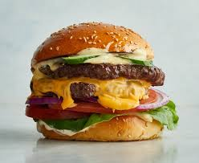

Epic cheeseburgers come in all kinds of manifestations, but we want them in and around our mouth no matter what. Slide those smashed patties with the gently caramelized meat fat between a toasted brioche bun and pass it over. You fall in love with the cheeseburger itself but the journey ain’t half bad either.
They’re the childhood friend that knows your highest highs and lowest lows.  They’ve been with you through thick and thin and they’re the best at keeping secrets. Whether it’s dressed up or informal, cheeseburgers have your back.
Sometimes we lose sight of what really matters in life.
There’s something to be said for a gourmet brie and truffle burger paired with parmesan frites, but don’t let that make you forget about the ol’ faithful with American cheddar and a squishy bun. Lettuce remind you that cheeseburgers come in all forms - bun intended.
Pop quiz: what’s the greatest thing to happen to your mind, body, and soul in recent history? A cheeseburger, obviously. Cheeseburgers know that what you want can also be what you need.
They say you’re never supposed to meet your idols. In this case, it’s a good thing your idol is inanimate.
Cheeseburgers are never going to give you up or let you down. They’ll also never run around or desert you.
They’ll never make you cry, unless it’s from sheer joy. Cheeseburgers certainly won’t say goodbye either.
Finally, cheeseburgers are incapable of telling lies or hurting you. On the flip side, they can still Rick Roll you.
There is debate on who painstakingly birthed our favourite monumental flavor creation into existence. What really matters is that, at the end of the day, we can collectively relish in the sweet glory of it all. From beef-to-bun ratio,
How much is too much?
cheese, and the careful alchemy of condiments, every cheeseburger is a small mountain of heaven.
Any day without a cheeseburger in it is a waste. You can find a cheeseburger no matter where you go in the world, so you have no excuse to miss out on the glory that some people can only dream of. Step up to the plate.
Cheeseburgers make your knees weak and your soul tingle. A great cheeseburger is a gastronomical event with so many varieties you couldn’t get tired of it if you tried.
There’s cheesy incarnation waiting for you no matter what your palate preferences are.
Unless you’re vegan, in which case we’re sorry for your loss. Epic cheeseburgers come in all kinds of manifestations, but we want them in and around our mouth no matter what. Slide those smashed patties with the gently caramelized meat fat between a toasted brioche bun and pass it over. You fall in love with the cheeseburger itself but the journey ain’t half bad either.
They’re the childhood friend that knows your highest highs and lowest lows. They’ve been with you through thick and thin and they’re the best at keeping secrets. Whether it’s dressed up or informal, cheeseburgers have your back.
Sometimes we lose sight of what really matters in life. There’s something to be said for a gourmet brie and truffle burger paired with parmesan frites, but don’t let that make you forget about the ol’ faithful with American cheddar and a squishy bun. Lettuce remind you that cheeseburgers come in all forms - bun intended.
Pop quiz: what’s the greatest thing to happen to your mind, body, and soul in recent history? A cheeseburger, obviously. Cheeseburgers know that what you want can also be what you need.


 unless it’s from sheer joy. Cheeseburgers certainly won’t say goodbye either.
Finally, cheeseburgers are incapable of telling lies or hurting you. On the flip side, they can still Rick Roll you.
unless it’s from sheer joy. Cheeseburgers certainly won’t say goodbye either.
Finally, cheeseburgers are incapable of telling lies or hurting you. On the flip side, they can still Rick Roll you.
 There’s cheesy incarnation waiting for you no matter what your palate preferences are.
Unless you’re vegan, in which case we’re sorry for your loss. Epic cheeseburgers come in all kinds of manifestations, but we want them in and around our mouth no matter what. Slide those smashed patties with the gently caramelized meat fat between a toasted brioche bun and pass it over. You fall in love with the cheeseburger itself but the journey ain’t half bad either.
They’re the childhood friend that knows your highest highs and lowest lows. They’ve been with you through thick and thin and they’re the best at keeping secrets. Whether it’s dressed up or informal, cheeseburgers have your back.
Sometimes we lose sight of what really matters in life. There’s something to be said for a gourmet brie and truffle burger paired with parmesan frites, but don’t let that make you forget about the ol’ faithful with American cheddar and a squishy bun. Lettuce remind you that cheeseburgers come in all forms - bun intended.
Pop quiz: what’s the greatest thing to happen to your mind, body, and soul in recent history? A cheeseburger, obviously. Cheeseburgers know that what you want can also be what you need.
There’s cheesy incarnation waiting for you no matter what your palate preferences are.
Unless you’re vegan, in which case we’re sorry for your loss. Epic cheeseburgers come in all kinds of manifestations, but we want them in and around our mouth no matter what. Slide those smashed patties with the gently caramelized meat fat between a toasted brioche bun and pass it over. You fall in love with the cheeseburger itself but the journey ain’t half bad either.
They’re the childhood friend that knows your highest highs and lowest lows. They’ve been with you through thick and thin and they’re the best at keeping secrets. Whether it’s dressed up or informal, cheeseburgers have your back.
Sometimes we lose sight of what really matters in life. There’s something to be said for a gourmet brie and truffle burger paired with parmesan frites, but don’t let that make you forget about the ol’ faithful with American cheddar and a squishy bun. Lettuce remind you that cheeseburgers come in all forms - bun intended.
Pop quiz: what’s the greatest thing to happen to your mind, body, and soul in recent history? A cheeseburger, obviously. Cheeseburgers know that what you want can also be what you need.